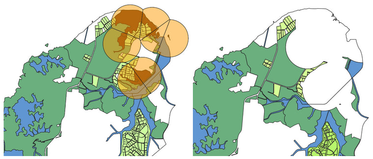
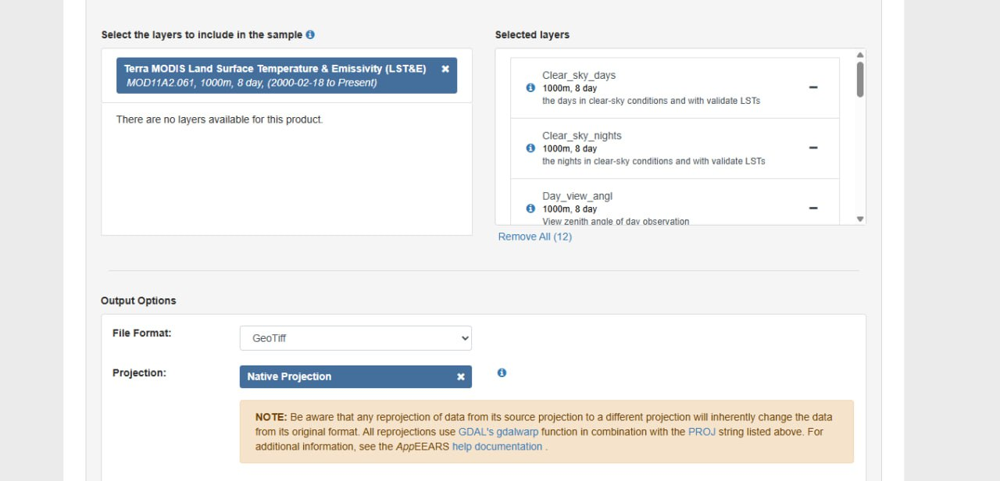
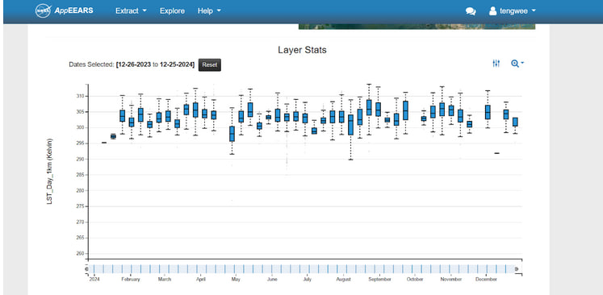
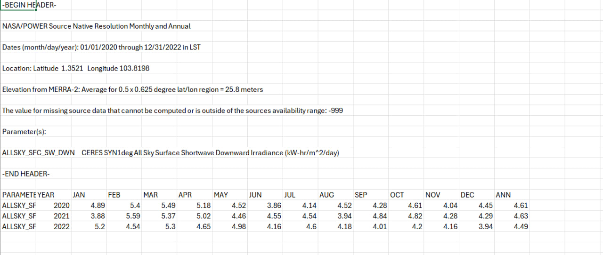
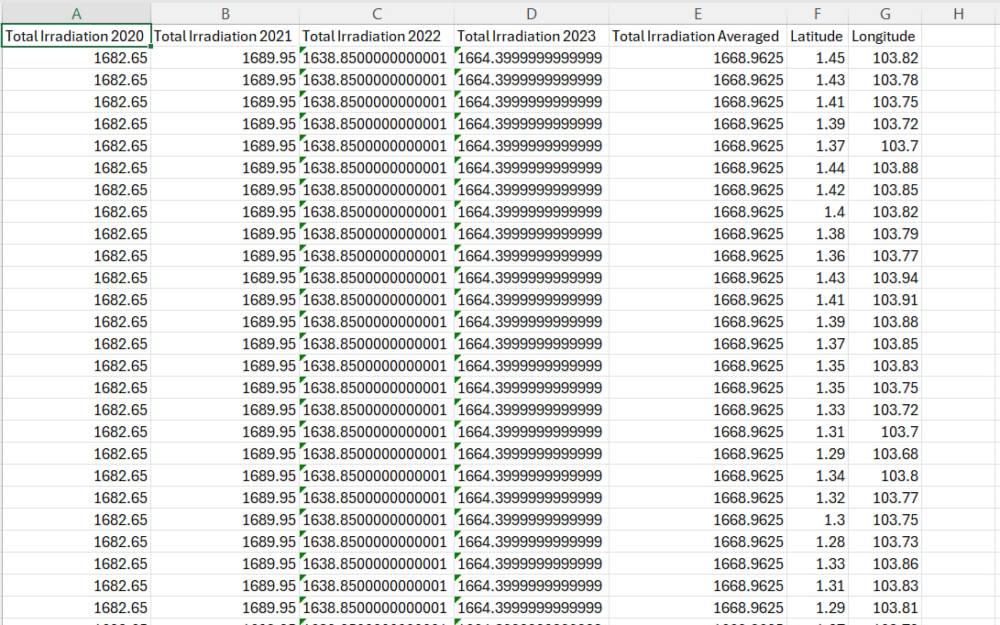
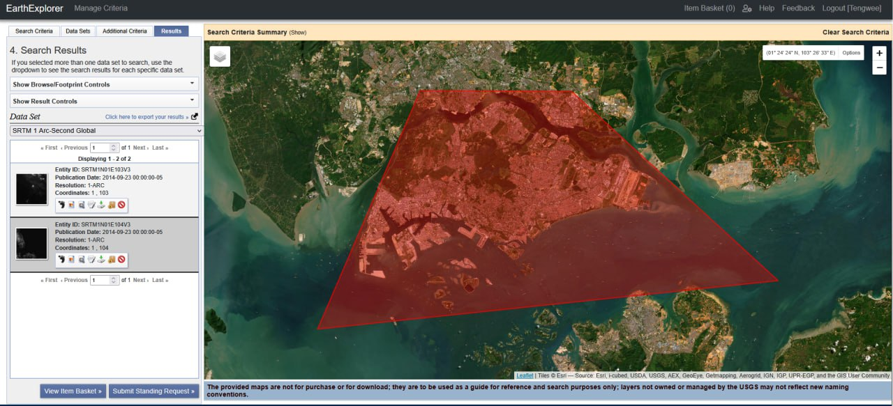

Land Use of Singapore
Our project focused on the viability of installing solar farms within Singapore to boost its energy output. To that end, our first primary objective was to find large areas of land that would allow for installations of as many solar panels as feasibly possible.
The first step involved isolating the amount of gazetted usable land space within Singapore. To do so, we utilised the dataset from Master Plan 2019. Areas labelled as ‘Open Space’ were denoted to be potential land areas that we could make use of, as it meant that there were no immediate plans to construct other types of infrastructure. We also gave priority to Open Spaces that covered large surface areas, as that would be more efficient as compared to numerous small Open Space areas. Areas labelled as ‘Waterbody’ were also denoted as potential areas to utilise. Since Singapore already has an existing floating solar farm at Tengeh Reservoir, there is thus a precedent for using water bodies for solar farms. Additionally, we obtained data on nature reserves within Singapore. These areas are considered unsuitable for solar farms and thus should be avoided. We imposed all these layers onto a map of Singapore, allowing us to identify which areas we should consider looking at in greater depth.
Natural Reserve Buffer
Since we wish to avoid placing solar farms within close proximity of nature reserves, we used the buffer tool to create a 1km radius dissolved buffer zone around the centroid of each natural reserve.

We will then clip the land use layer using this buffer to obtain the true suitable area.
Getting Temperature Data
MODIS is a satellite-based sensor aboard NASA’s Terra and Aqua satellites, capturing Earth’s surface conditions daily since 2000. It provides high-quality measurements across multiple bands, including thermal infrared, essential for analyzing Land Surface Temperature (LST).

AppEEARS is an online platform provided by NASA designed to simplify extraction and analysis of Earth observation datasets. It offers easy access to MODIS data and provides GIS-ready files in GeoTIFF format. We decided to use NASA APPEEARS data for our surface temperature data sources. The request was crafted to download data in GeoTiff format for better processing in QGIS. We decided to download the data for Terra MODIS Land Surface Temperature and Emmisivity, which uses thermal infrared bands 29, 31, and 32, which are the most crucial for the algorithms that determine both land surface temperature and emissivity.

From this data, we attained firsthand accurate temperature data across Singapore. However, this represents Land Surface Temperature, which is not relevant for our considerations on Solar farms, since the range between all data points being presented in are within 20 Kelvins of each other, comfortably within the operating temperature window for Solar Panels.
Getting Solar Irradiation Data
More crucial for our investigation is the Solar Irradiation Data figures for Singapore, since it will allow us to get an accurate estimate of the potential power output provided by any potential photovoltaic solar farm within the Singapore area. The widely cited figure for Singapore is 1580Kwh/m^2, but we decided to gather more comprehensively detailed firsthand data for our investigation.
We eventually settled on using the NASA Power project. The NASA Prediction Of Worldwide Energy Resources (POWER) Project provides data in improving the accessibility and usage of NASA Earth Observations (EO) data, supporting community research and applications in renewable energy, sustainable buildings, and agroclimatology.
Direct access to GIS data from NASA’s power project proved too difficult to obtain, since it was locked behind ArcGIS access, so we eventually settled on gathering data manually by scraping their API function
We settled on the ALLSKY_SFC_SW (All Sky Surface Shortwave Downward Irradiance) parameter for our API request since it corresponded to the irradiation data we needed for our investigation. The parameters for latitude and longitude were carefully chosen to be within Singapore’s land boundaries.

This was the end result of one of our API scraping. The actual satellite data being used here is from the CERES instrument, which is a broadband radiometer instrument, which means that there is no specific satellite band being used for this data.
One disadvantage of using this data source is the SYN1 deg aspect of the CERES instrument. While the data itself is firsthand and accurate for the location, it has a 1 degree latitude/longitude resolution, which means that every point within the same 1-1 lat/long bound would have the same figures for solar irradiation. Due to the small size of Singapore island, this data source would interpret all points of Singapore to have the same irradiation figures. To verify this, our team ran the script 50 more times across different points in Singapore, and created a helper script to compile all CERES data collected into one main csv file.
The chosen resolution for CERES supports our inference that apart from elevation, Singapore lacks the geographical variance to have any intrinsic geographical bias when choosing a location for a solar farm.

Our helper script ran extra calculations, processing the raw data from fig 1.3, which only gave the average daily radiation across different months and years. For a more broad analysis, our script multiplies the figures to obtain an annual value for all years, and compiles the data across all API scrape operations.
The results shown in 1.4 confirm the assertion on the 1 degree resolution, as it can be seen that all geographical points show the same figures across all 3 years of data. But this confirms for us that the annual irradiation across Singapore in recent years is 1668Kwh/M^2, which is higher than the figure provided online, and this will be the figure used in later calculations for our evaluation.
Aspect and Slope Maps
Once we identified the main areas we wanted to perform in-depth analyses on, we then created aspect and slope maps to determine how much construction would be needed to make these areas usable for placing solar farms. Both maps utilised Singapore’s DEM raster data, then using the slope and aspect tools in QGIS.
We used data from USGS Earth Explorer, which was open source and allowed us to find detailed topographical data on the Singapore region

To specify the Singapore region, we selected a polygon to isolate the Singapore region and searched for DEM raster maps for elevation pertaining to our selected region, which gave us two different raster maps. As the data was in two separate DEM raster files, we had to manually merge the two in QGIS to get a whole raster map for topography containing all of Singapore, which we used as the base to process out the rest of our aspect and slope data.
Infrastructure Proximity
We created a proximity map using the OSM dataset on roads in Singapore, then superimposed it over our map along with OSM vector data for buildings in Singapore. Since the construction of solar farms is not relegated to purely the solar panels (fences, storage, drainage swales, etc.), we decided that demarcating areas for these forms of infrastructure to be built was also important. In addition, proximity to roads is vital for ensuring that construction goes smoothly, such that materials can be ferried to the site without excessive effort.